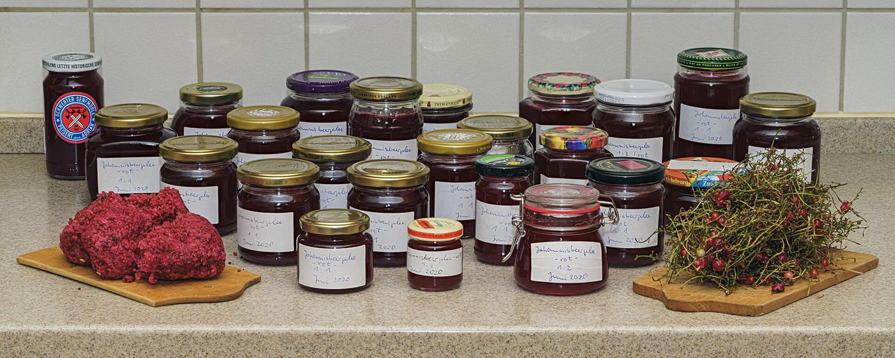

О качестве
От грядки до банки — меньше суток
Мы не храним сырьё неделями на складе. Всё, что собрано утром, к вечеру уже сварено, разлито и пастеризовано.
1
СборЯгоды и овощи с 14 ферм в радиусе 80 км, лесные ягоды — от сборщиков Костромской области
2
СортировкаВручную, в день сбора: в банку идёт только целая и спелая ягода
3
ВаркаКотлы до 20 кг, без загустителей — густоту даёт сама ягода и время
4
БанкаСтеклянная тара, пастеризация, лабораторный контроль каждой партии
Чего нет в наших банках
Состав — только то, что на этикетке
Консервантов
Красителей
Загустителей
Ароматизаторов
Цифры
Сколько ягоды в банке
Доля ягод и фруктов в наших вареньях. Цифры в демо условные — на сайте бренда здесь будут данные из его технических условий.

Документы
Сертификаты и декларации
Декларации соответствия ЕАЭС на каждую позицию и протоколы лабораторных испытаний — пришлём по запросу для сетей и маркетплейсов.